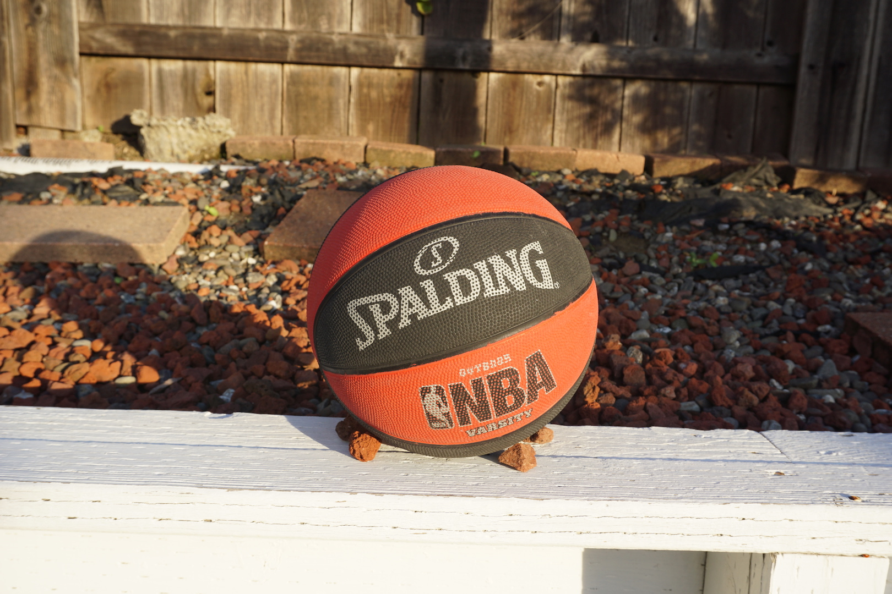
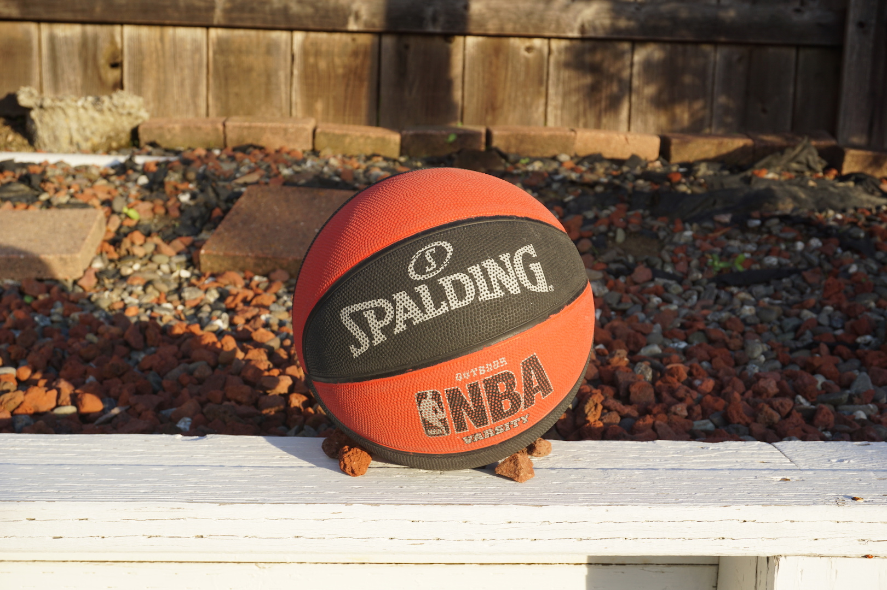
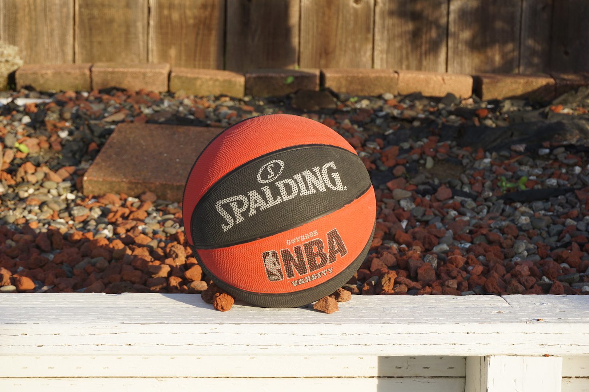
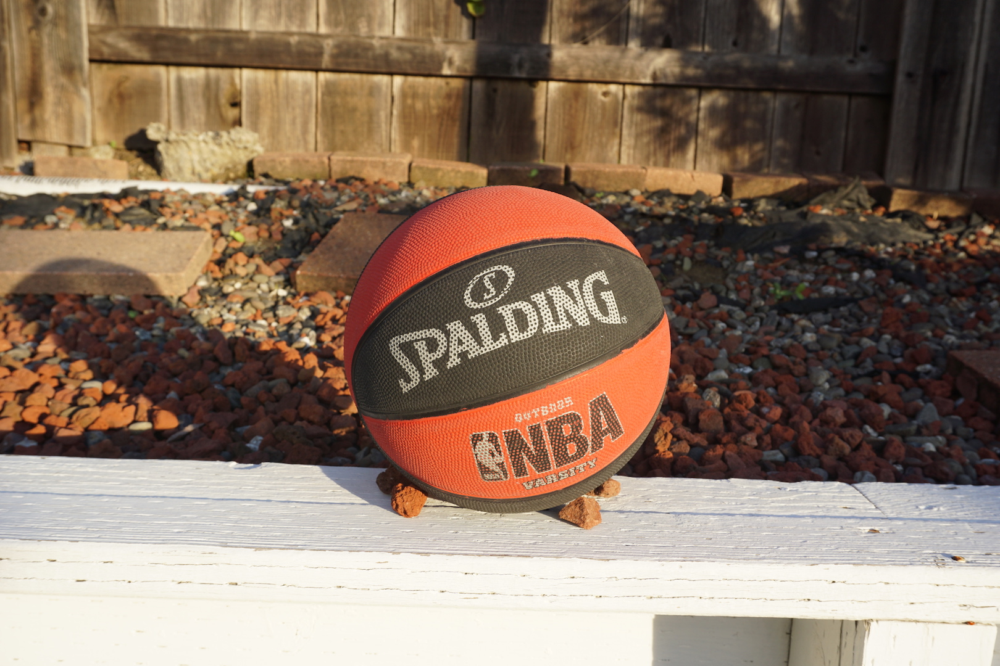
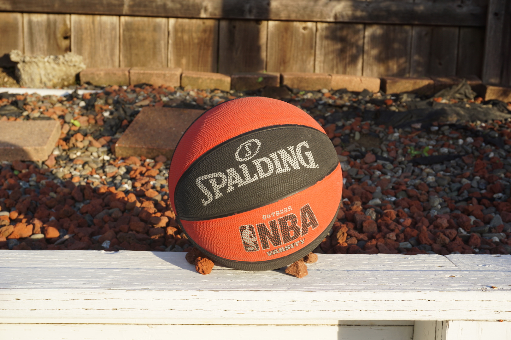
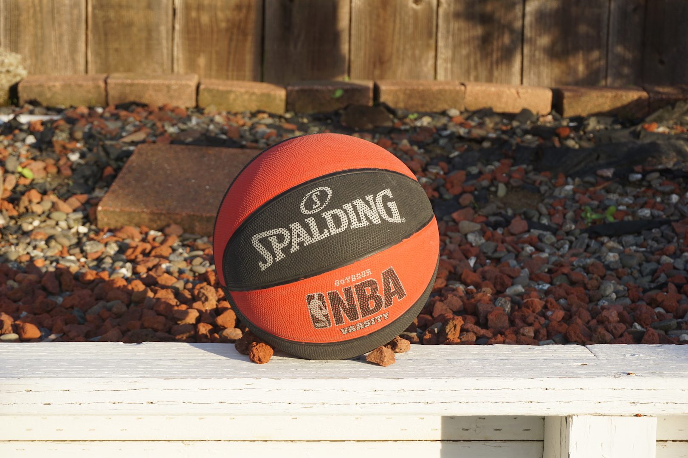
The Vertigo Shot, also known as the Dolly Zoom, is a reference to the famous scene in Hitchcock's Vertigo (1958).
I achieved the Dolly Zoom through two ways: zooming in while dollying out (such that the background compresses)
and zooming out while dollying in (such that the background expands). I made sure to keep the subject of the image relatively the
same size as I increased or decreased my distance to the subject.
For this project I used my Sony Alpha a6000 Mirrorless camera.
The third scene is an attempt to recreate Hitchcock's famous staircase dolly zoom at the Hotel Vertigo in
SF. Unfortunately I did not have the means to effectively dolly vertically, so I tried an alternative way by taking
the pictures at each floor. However, there is a significant amount of distance between each floor so the zoom looks
very disjoint.
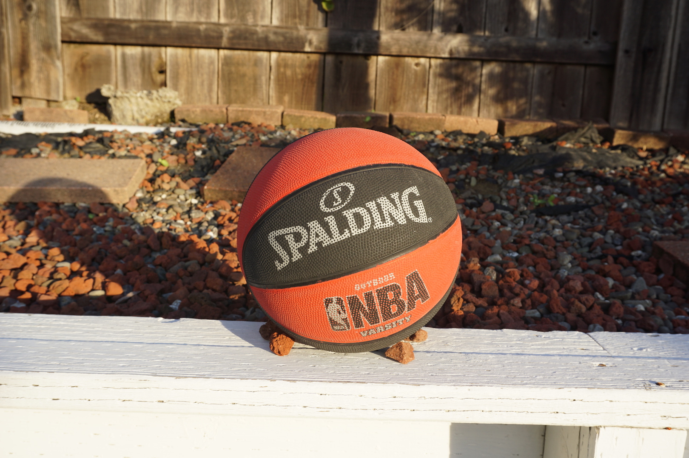
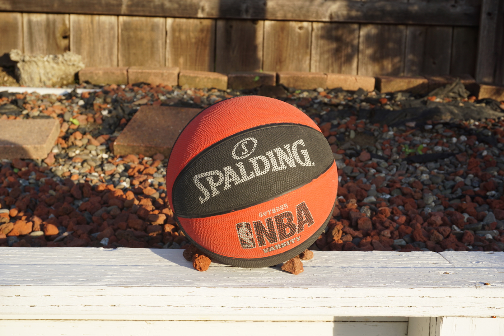
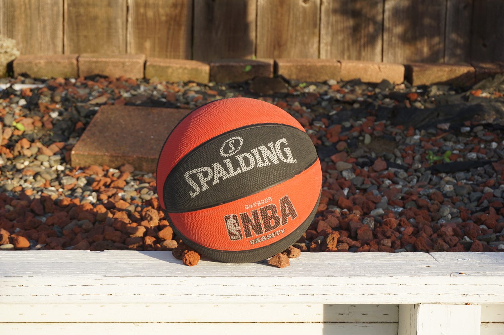


This project aimed to recreate the selective focus camera effect, a Tilt Shift, by selecting a focus plane and blurring the rest of the
image. The end result is a narrower depth of field and gives the illusion that one was really close to the subject. For my implementation,
I first started by creating a horizontal mask and used the following workflow:
- select a point of interest (the y coordinate will be used to create the horzontal mask with a default padding of 150 pixels above
and below the y coordinate)
- increase saturation of the image by 50%
- in five levels, recursively increase the size of the mask
- invert the mask to get everything except the focus plane
- blur the rest of the image
- add focused part and blurred image
The result is an image where the image gets blurrier and blurrier as you get farther from the focus plane.
Tossa de Mar
Photo taken by me
Wondercon
Photo taken by me
 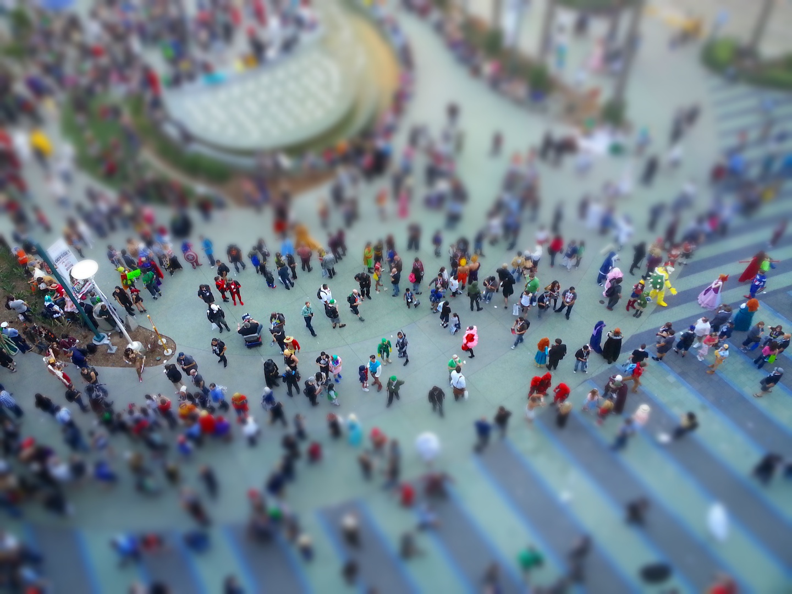
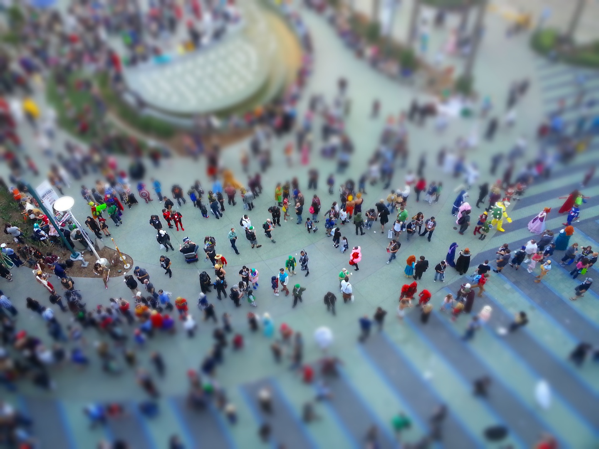
Boats in Tossa de Mar
Photo taken by me
I implemented a way to have the user specify a number of points, and then click around the image to create a complex mask.
Alpine Climb source


Cable Car source
Castle source

Hotel in Hawaii
Photo taken by me
 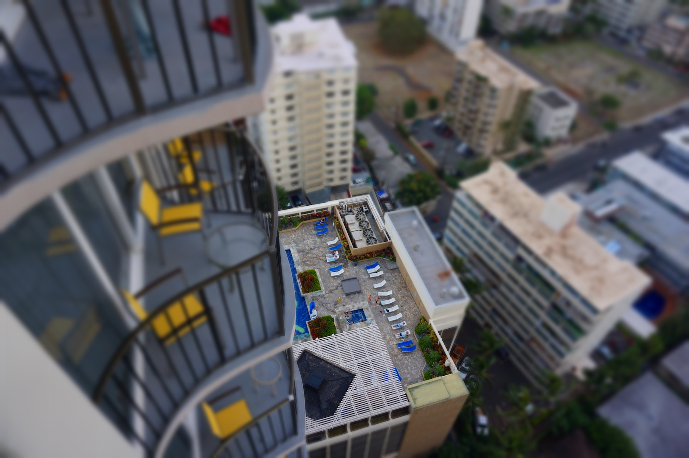
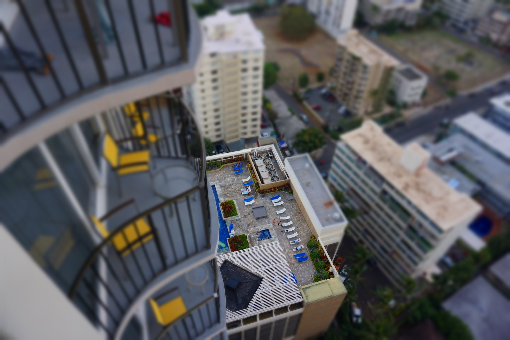
I took a series of photos of Union Square from the Cheesecake Factory terrace and then blurred each image with the same point of interest to create a fake stop motion animation.